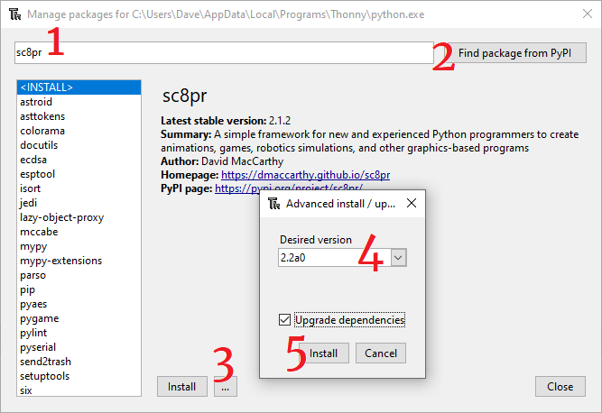
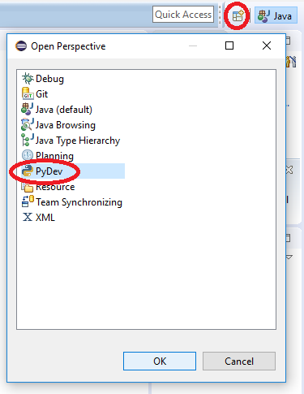
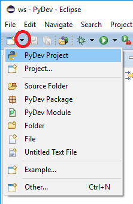
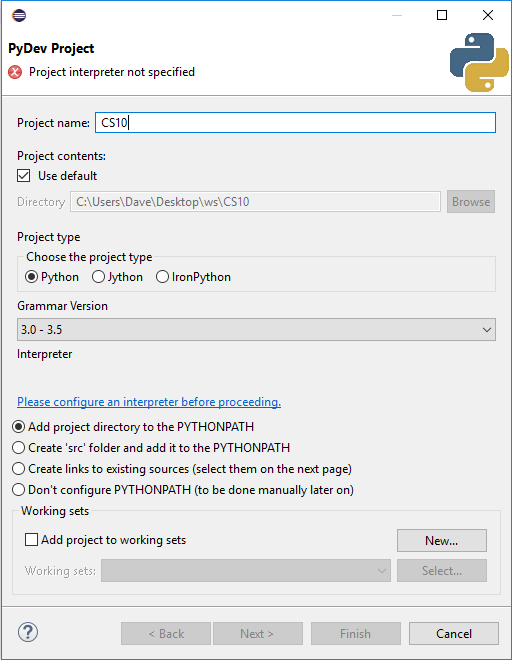
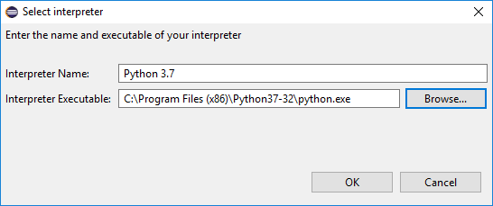
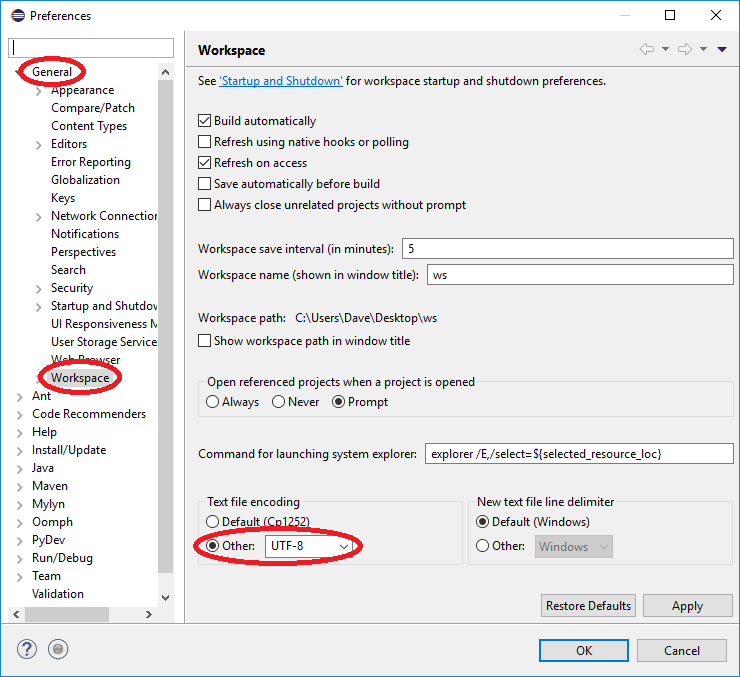
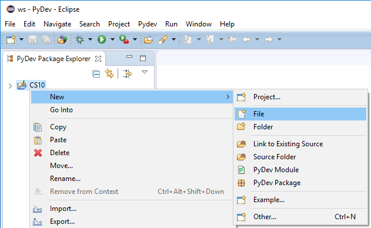

expand_lessProgramming Tools
To write your own programs, you will need several software tools:
- A text editor to create and modify your programs. Ideally the editor should understand the programming language you are using so that it can help you write/fix programs.
- A compiler or interpreter for the programming language you are using, to translate your programs into machine language.
- A console or desktop to run the program in.
- A debugger to track down errors.
An Integrated Development Environment (IDE) is a program that collects all of these tools in a single place, to make your work as a programmer more productive. There are many different IDE’s available for Python, including...
expand_morerepl.it
repl.it is a cloud-based IDE. Your files are saved in the cloud and you can access them from any computer using a web browser (Google Chrome or Mozilla Firefox recommended). You do not need to install any software on your computer to write programs using repl.it.
You will need to create an account the first time you use repl.it. I recommend that you use your EIPS Google account to login to repl.it. Be sure to protect your privacy by not providing any information about yourself that you do not want to become public.
Once you have created an account, you can create your own coding projects (called “repls”) or create your own “fork” (copy) of any public projects. This IDE supports many different programming and markup languages.
expand_moreThonny
Thonny is a Python IDE designed for students who are new to programming. You may want to use Thonny instead of repl.it when writing programs that use graphics, since graphics-based programs tend to run slowly over the cloud. Any changes that you make to your project using Thonny will need to be uploaded to repl.it since Thonny does not sync files to the cloud automatically.
To use Thonny at home or on your own laptop, download and run the installer from the Thonny website. A Python interpreter is included with Thonny so you do not need to install it separately.
After Thonny is installed, you will need to install the graphics and robotics software for this course. Go to Thonny’s “Tools” menu and select “Manage packages...”

- Type the name of the software package,
sc8pr. - Click the button to search the Python Package Index (PyPI).
- Click the three dots.
- Select the desired version. This course uses
sc8pr 2.2a0. - Check “Upgrade Dependencies” and then click the Install button.
If an error occurs while trying to install the packages, exit Thonny and re-open it as an administrator.
expand_moreEclipse
Eclipse is an IDE that runs on your local computer. Software must be installed and configured before you can use it so it is not recommended for home use by beginners.
Like Thonny, the files you create or modify in Eclipse will be saved on the local computer or network. They will not be available on other computers unless you sync them yourself.
If you install Eclipse on your own computer, you will need to install Python first. You will also need to install additional packages by running the following command (after installing Python but before configuring Eclipse) in your terminal program:
pip3 install -U pip setuptools sc8pr==2.2a0
On Windows, if the system does not recognize pip3, try typing the command as:
py -3 -m pip install -U pip setuptools sc8pr==2.2a0
Eclipse may already be installed on computers in the Computing Science Lab. You will need to configure it the first time you use it.
- Workspace: When Eclipse launches, you will be asked to choose a workspace. This is a folder where Eclipse will keep your files. Use the CS10 folder in your EIPS OneDrive for your workspace location. Use the same workspace every class. If you start Eclipse and your work seems to be missing, you have probably chosen the wrong workspace folder.
- Welcome: When Eclipse has finished loading, you can close the Welcome tab.
- Perspective: By default, Eclipse opens in the “Java” perspective. Java is a
programming language that we will use in CS 30. For CS 10 and 20, most of our assignments
will be done using the Python language. At the upper right of the Eclipse window, click the
+ icon beside the Java button. Select “PyDev” (Python Development) from the list.

- Project: To create a project, click the small triangle near the left end of the toolbar.
Choose “PyDev Project” from the list.

- Configure PyDev: Enter Python for the project name.
Change the “Grammar Version” to the highest available choice, and then click the link labelled
“Please configure an interpreter before proceeding.” When asked how you want to proceed, choose
“Manual Config”.

- Locate Python: The list of available interpreters should be empty. Click the “New”
button and type “Python 3.8” or “Python 3.7” for the interpreter name (whichever is installed). Click “Browse” and then locate the
file python.exe. Click “OK” or “Finish” to close
all of the dialog windows.

- Encoding: Open Eclipse’s “Window” menu and choose “Preferences”. Under “General”, find
“Workspace” and change the “Text File Encoding” to UTF-8.

- New File: Right-click on your project and choose “New | File”. Type a file name
such as “test.py”. The file name must end in “.py” to be recognized as a Python file. Do
not use spaces or punctuation marks in your file name.

- Write a Program: In the editor, type a short program. You can copy and paste the examples below. Click the green and white “Run” button on the toolbar and select “Python Run”.
expand_moreAssignment
- Test that your IDE is working properly by running the following Python 3 programs as examples. Here is an example of a simple console program (no graphics)...
# Program 's02_print.py' print(5 * 2)Here is an example that accepts input from the keyboard...# Program 's02_name.py' user = input("Please enter your name: ") print("Hello, {}!".format(user))